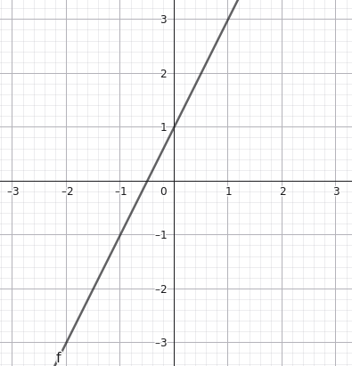
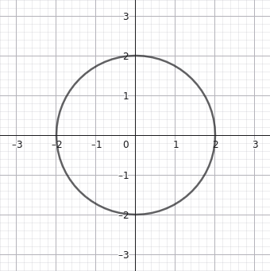
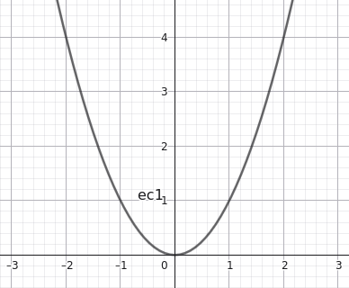
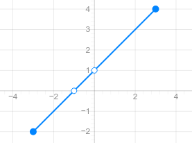
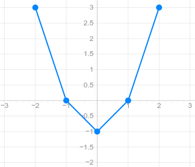

Concepto de función
Una función es una relación entre dos conjuntos que asigna a cada valor de la variable independiente un único valor de la variable dependiente.
Se representa mediante la expresión:
\(y=f(x)\)
Donde:
- \(x\) es la variable independiente.
- \(y\) es la variable dependiente.
- \(f\) es el nombre de la función.
- \(f(x)\) es la imagen de \(x\), es decir, el resultado que se obtiene al sustituir \(x\) en la función.
Por ejemplo, si tenemos la función
\(f(x)=2x+1\)
la imagen de \(3\) se calcula sustituyendo \(x\) por \(3\):
\(f(3)=2\cdot3+1=7\)
Por tanto, \(f(3)=7\), y la gráfica contiene el punto \((3,7)\).
Veamos su representación gráfica:

¿Qué no es una función?
Una relación no es una función de \(x\) si a un mismo valor de \(x\) le corresponden dos valores distintos de \(y\).
Por ejemplo, la circunferencia (de radio 2):
\(x^2+y^2=4\)
no representa una función de \(x\), porque para \(x=0\) se obtienen dos valores:
\(y=2\qquad\text{e}\qquad y=-2\)
Veamos su representación gráfica:

En cambio, \(y=x^2\) sí es una función, ya que cada valor de \(x\) tiene un único cuadrado.
Veamos su representación gráfica:

Para reconocer una función en una gráfica, utilizamos la prueba de la recta vertical: si alguna recta vertical corta la gráfica en más de un punto, la gráfica no representa una función de \(x\).
¿Cómo podemos representar una función?
- Mediante una gráfica (un dibujo en el que en el eje X se representan los valores que se introducen en la función, y en el eje Y los valores que se obtienen al aplicarles la función).
- Mediante una tabla de valores (una tabla de dos columnas \(X\) e \(Y\) en la que por filas se representan el valor que se le da a la \(x\) y el valor que se obtiene para la \(y\).
- Mediante una expresión algebraica (una fórmula que define cómo calcular la \(y\) dado un valor de la \(y\)).
Función definida mediante una gráfica
Una función puede darse directamente mediante su representación gráfica en unos ejes de coordenadas.
Cada punto de la gráfica tiene la forma:
\( (x,f(x)) \)
La coordenada horizontal indica el valor de entrada y la vertical, su imagen.
Ejemplo: lectura de una gráfica
\(y=x+1{-3\leq x\leq3}\)

- Para \(x=0\), la imagen es \(f(0)=1\).
- Para \(x=2\), la imagen es \(f(2)=3\).
- La gráfica corta al eje Y en \((0,1)\).
- La gráfica corta al eje X en \((-1,0)\).
- La función es creciente en todo su dominio representado (a medida que aumenta el valor de X disminuye el valor de Y).
¿Qué información podemos obtener de una gráfica?
A partir de una gráfica podemos estudiar:
- El dominio y el recorrido.
- Las imágenes de determinados valores.
- Los cortes con los ejes.
- Los intervalos de crecimiento y decrecimiento.
- Los máximos y mínimos.
- La continuidad y las discontinuidades.
- La simetría.
- La periodicidad.
- Las asíntotas, cuando existan.
La lectura debe realizarse teniendo en cuenta la escala de los ejes y si los extremos están incluidos o excluidos.
Un punto relleno indica normalmente que el punto pertenece a la gráfica; un punto hueco indica que ese punto concreto no está incluido.
Función definida mediante una tabla de valores
Una tabla muestra algunos valores de la variable independiente y las imágenes que les corresponden.
Por ejemplo, consideremos:
\( f(x)=x^2-1 \)
La tabla de valores es:
| \(x\) | \(f(x)=x^2-1\) |
| \(-2\) | \(3\) |
| \(-1\) | \(0\) |
| \(0\) | \(-1\) |
| \(1\) | \(0\) |
| \(2\) | \(3\) |
Cada fila representa un punto de la gráfica. Por ejemplo, la primera fila corresponde al punto \((-2,3)\).
Si representamos todos los puntos y los unimos siguiendo el comportamiento de la función, obtenemos una aproximación de su gráfica.

¿Qué podemos deducir de una tabla?
Una tabla permite:
- Calcular o consultar imágenes.
- Obtener puntos para representar la función.
- Observar tendencias de crecimiento o decrecimiento.
- Identificar posibles simetrías.
- Calcular tasas de variación media entre dos valores conocidos.
Sin embargo, una tabla finita no determina necesariamente toda la función. Para conocer el dominio completo, el recorrido o el comportamiento entre los puntos, puede ser necesaria información adicional.
Función definida mediante una fórmula algebraica
Una función puede expresarse mediante una fórmula que permite calcular la imagen de cualquier valor perteneciente a su dominio.
Por ejemplo:
\( f(x)=3x-2 \)
Para calcular \(f(4)\):
\( f(4)=3\cdot4-2=10 \)
Para calcular \(f(-1)\):
\( f(-1)=3(-1)-2=-5 \)
La fórmula permite calcular imágenes sin necesidad de disponer de una tabla completa.
Ejemplos de fórmulas de distintas familias
| Tipo de función | Ejemplo |
| Afín | \(f(x)=2x+3\) |
| Cuadrática | \(f(x)=x^2-4\) |
| Polinómica cúbica | \(f(x)=x^3\) |
| Racional | \(f(x)=\dfrac1x\) |
| Exponencial | \(f(x)=2^x\) |
| Logarítmica | \(f(x)=\log_2x\) |
| Trigonométrica | \(f(x)=\sin x\) |
| Definida a trozos | \(f(x)=\begin{cases}x,&x<0\\x^2,&x\geq0\end{cases}\) |
Restricciones de una fórmula
No todas las fórmulas se pueden evaluar para cualquier número real.
Por ejemplo:
\( f(x)=\frac1{x-2} \)
no está definida en \(x=2\), porque no se puede dividir entre cero.
Asimismo:
\( g(x)=\sqrt{x-1} \)
requiere \(x-1\geq0\), y
\( h(x)=\log(x+3) \)
requiere \(x+3>0\).
Por ello, antes de estudiar las características de una función, es necesario determinar qué valores puede tomar \(x\).